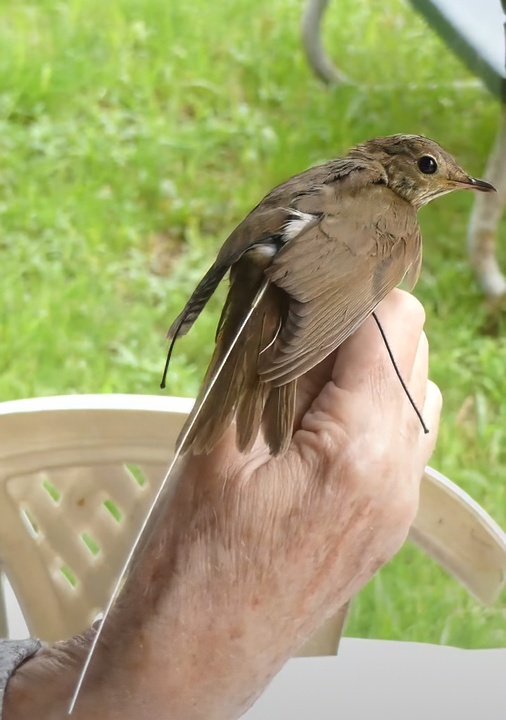

10-Dec-2023
Migratory Movement and Motus

Swainson's Thrush with MOTUS nanotag.1
It’s rare to see birds in flight during migration. They typically fly high to elude predators and at night to keep from overheating. But we can track them, thanks to Motus towers and the technology that detects signals from the receivers on birds that have been tagged. While this data is exciting to those who use the Motus kiosk at Ankeny Hill Nature Center, it has been a game changer for researchers.
Before Motus, researchers tracked birds by placing bands on their legs. They then had to recapture that bird to obtain useful data. Now researchers can attach small nanotags to migrating birds, which send signals that are detected by Motus towers, like the one on the north side of the Ankeny Hill Nature Center.
By tracking the movement patterns of migrating birds, such as direction of flight and length of stay in a location, researchers can make informed decisions about threats to vulnerable species and ways to protect their diverse habitats.
One type of bird being tracked this way is the Swainson’s Thrush (SWTH). During this year’s fall migration, the Ankeny Motus tower detected nine SWTH traveling to their winter home in Central America. Seven of the nine had been tagged by Dr. Debbie Wheeler, biologist/entomologist at the University of the Fraser Valley in British Columbia.
Dr. Wheeler works collaboratively with the Vancouver Avian Research Centre, monitoring bird activity in Colony Farm Regional Park, in Coquitlam, BC. Her goal is to use information gathered from Motus to improve understanding of migration patterns and behavior of SWTH and further define their migratory path along the Pacific flyway.
Wheeler’s study tagged 20 SWTH at the Colony Farm site. That means the Ankeny tower detected 35% of her study population.
Dr. Wheeler says, “All we really know about our SWTHs is that they head for South America in the Fall, and we have had quite a few recaptures of banded birds when they have returned in the Spring, so we do know they show high site fidelity for summer breeding grounds. The Motus data is starting to show some favored migration routes - unfortunately we probably don’t have enough tags to draw any strong conclusions, but the results so far are interesting.”
Another objective of Dr. Wheeler is to use Motus to identify potential migratory pathways of SWTH to determine patterns of migration and molt-migration. Molting and migration take a lot of energy, so for most birds these activities don’t overlap. However, SWTH are a species that can undergo molt-migration. They leave their breeding grounds and travel partway south in search of a suitable location with abundant food and low predator risk. They might complete their molt in this location or continue to migrate while in the process of molting. Wheeler hopes to establish evidence that birds breeding further north in Canada are indeed stopping at Colony Farm to initiate and/or complete their annual molt on their way south.
The success of Wheeler’s research is dependent upon the number of Motus towers on the SWTH flight path. And while the number has increased significantly in the last 5 years, she says, “We just need more data from Motus stations further south. We have several birds that appear to have settled in Mexico, but I suspect they have gone further south, but there are fewer stations down there.”
Knowing that the success of research is dependent on tracking towers, Vanessa Loverti, U.S. Fish and Wildlife Service regional shorebird biologist, has taken the lead in the placement of Motus towers in Oregon and Washington, including the tower at Ankeny.
She is currently researching migratory pathways of shorebirds along the Oregon and Washington coast. She says, “The cost of putting up a Motus tower is much more feasible for our partners and uses a collaborative research network for avian conservation, which provides valuable information like length-of-stay, timing of migration to the breeding ground, and data on unpredicted stopover sites.”
It is clear that access to Motus technology and the data it generates greatly facilitates the researchers’ work. As more towers are built and more birds tagged, Motus will play an increasingly important role well into the future. The Ankeny tower will be part of that, and we will be curious to see if any of Dr. Wheeler’s birds pass the Ankeny tower when they return to their summer grounds during spring migration.
By Vickie Stiteler
Credits:
11Vancouver Avian Research Centre. (2022, July 7). Fitting a Motus tag [Video]. YouTube. https://www.youtube.com/watch?v=YrbWbYvU3go